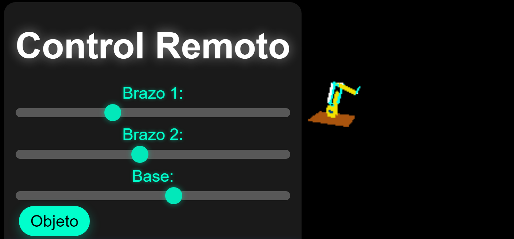

El gemelo virtual del brazo robótico ha sido desarrollado utilizando HTML y la biblioteca Three.js para la renderización de gráficos en 3D. Este modelo digital replica con precisión la estructura y los movimientos del brazo físico, permitiendo visualizar y controlar su funcionamiento en un entorno virtual.
En la interfaz del gemelo virtual, el usuario puede manipular el brazo mediante un control similar al del modelo real. Esto permite ajustar la posición de los servomotores y observar cómo responde el sistema en tiempo real. Además, gracias a la representación 3D, es posible analizar los movimientos desde distintos ángulos, facilitando la comprensión de su cinemática y comportamiento.
El gemelo virtual es una herramienta útil tanto para la simulación como para la validación de movimientos antes de ejecutarlos en el brazo físico. Esto ayuda a prevenir errores, optimizar trayectorias y realizar pruebas sin riesgo de dañar los componentes reales.

El gemelo virtual del brazo robótico funciona como una simulación interactiva en 3D creada con HTML y Three.js. Su propósito es replicar en un entorno digital los movimientos y acciones del brazo real, permitiendo visualizar su comportamiento antes de ejecutarlo físicamente.
Gracias a este funcionamiento, el gemelo virtual se convierte en un recurso clave para la simulación, prueba y optimización del brazo robótico, ofreciendo una forma segura y eficiente de interactuar con el sistema antes de su ejecución física.